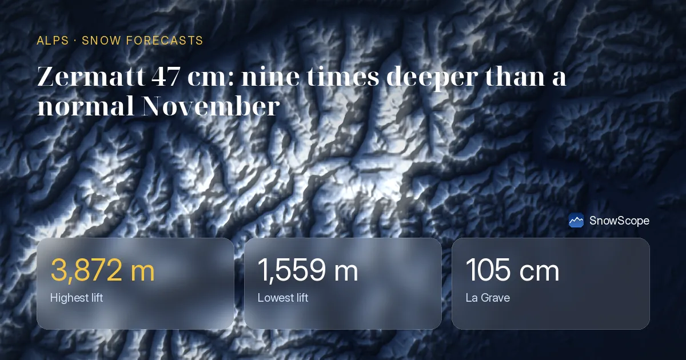
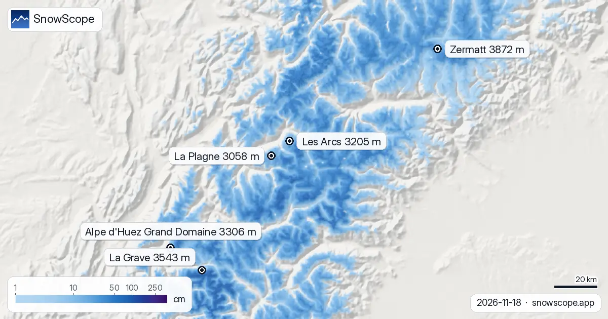

Zermatt 47 cm: nine times deeper than a normal November
Zermatt is running far ahead of the past decade. The upper slopes hold 47 cm today, nearly seven times the depth we normally see by mid-November at this height.
See the live snow forecast for Zermatt in the SnowScope appSnow depth, powder alerts and the 3D map, free.
How rare is this snow depth?
When I look at Zermatt's upper slopes at 2716 m, the depth today is 47 cm. That is 690% of what we expect for this date. Put another way: in nine winters out of ten, Zermatt would have less snow than it does today. The usual depth in mid-November is about 31 cm; the deep winters reach 56 cm. We are well into that upper range already.
Three days ago, on 16 November, the Alps as a region were losing snow cover. We had 63,230 km2 of snow-covered land. Today we are down to 60,480 km2. But the resorts themselves remain well stocked. Snow is not disappearing fast; it is moving and settling. The 0°C level has held steady at around 2200 to 2460 m at Zermatt, keeping the top slopes cold.
| Resort | Snow depth | New snow, 72 h | Coming, next days | Top |
|---|---|---|---|---|
| Zermatt | 47 cm | 61 cm | 77 cm | 3,872 m |
| La Grave | 105 cm | 77 cm | 104 cm | 3,543 m |
| Alpe d'Huez Grand Domaine | 71 cm | 59 cm | 91 cm | 3,306 m |
| Les Arcs | 64 cm | 81 cm | 96 cm | 3,205 m |
| La Plagne | 38 cm | 68 cm | 90 cm | 3,058 m |

Rain and snow: where the line falls
The question on the ground right now is simple: where does rain turn to snow? In the next four days, the 0°C level in the Alps will swing. Today it ranges from 2060 m at the lowest (early morning, north-facing slopes) to 2760 m at the highest (warmest midday hours). By Friday, it will drop sharply. Friday's freezing level falls to between 1510 m and 2520 m across the region.
At Zermatt, the snow line during the warmest hours of the day sits around 2200 m today and Thursday. That means rain is falling on grass and rock below 2200 m, and snow above it. Friday brings a turning point: the snow line at Zermatt drops to 2200 m again in the morning and stays there. By Saturday, it crashes to 1300 m. That is a gift for mid-mountain resorts that have been fighting to hold on to what little they had.
No rain on the snowpack at the top
One risk we watch closely in early season is rain falling onto established snow. At Zermatt, that is not happening. The snow line stays below the base at 1559 m all four days. The upper terrain stays in the dry snow zone. The 0°C level at the base never climbs above freezing during the day.
Lower down, at resorts like Alpe d'Huez Grand Domaine and Les Arcs, the snow line does cross into the ski area most days. But the foundation is thin, and the air mass that brings rain also brings a surge of cold air later. We do not see a true rain-on-snow event in the forecast—a day with heavy rain AND a high snow line AND existing snow on the slopes. That would crust and weaken the pack. We are spared that scenario.
What is coming in the next four days
Zermatt will receive about 77 cm of new snow by Saturday evening, spread across Thursday, Friday and Saturday. That is reliable accumulation at height. The precipitation is split across four days, so it will not arrive as a single dump. Instead, the mountains will gain steady coverage.
Compare this to resorts lower and further west. La Grave, perched high at 3196 m base elevation, has 105 cm depth today. It will add 104 cm in the forecast period. Les Arcs, sitting at 1222 m, holds 64 cm and will add 96 cm. The pattern is consistent: high mountains stay cold and dry, low mountains warm and wet. Friday is the transition day when the freezing level collapses and the entire Alps shift into snow mode.
What this means on the slopes
If you are skinning or hiking above 2200 m at Zermatt this week, you will find established snow that is safe from rain. The base layer is thickening. Below 2200 m, expect rain today and Thursday, then a changeover to snow Friday and Saturday as cold air moves in. Plan your ascents accordingly.
The story here is not about a single storm. It is about consistency. Early November brought snow, more arrived on Saturday and Monday, and the forecast closes out the week with fresh powder at altitude. For mid-November in the Alps, that is nine times better than normal.
Tips for skiers
- Ski above 2300 m to stay in cold snow. Rain is falling below 2200 m today and tomorrow. The boundary rises to 2300-2400 m at midday but drops back below 2200 m at Zermatt by Friday afternoon.
- Watch the Friday changeover carefully. When the 0°C level drops from 2000 m to 1300 m at Zermatt between Thursday and Saturday, any wet snow above that line will refreeze. Early Friday morning offers a brief window of stability before the transition.
- Lower resorts gain ground Friday through Saturday as the snow line falls. Alpe d'Huez Grand Domaine (1124 m base) will see snow arrive at mid-mountain by Friday, adding 91 cm in the forecast window.
- Check the official avalanche bulletin for your area before touring off-piste. Fresh snow and a sudden freeze can alter slope stability.
About these numbers
Resort snow depths are the deepest snow on the resort's upper slopes from the SnowScope snow model (about 1 km, run of 18 November); they are estimates for an area, not a measurement at one point. Station values are measurements on the date shown. Forecasts can change. Always read the official avalanche bulletin before going off-piste.
Official avalanche bulletins: EAWS (Alps)
Cite this report
For research, teaching or the press: the numbers and charts are free to reuse under CC BY 4.0 with this citation.
SnowScope (2026), Zermatt 47 cm: nine times deeper than a normal November, https://snowscope.app/blog/en/2026/11/alps-freezing-level-snow-line-18-november-2026.html, accessed 2026-11-18
SnowScope (Atlas Labs). (2026, November 18). Zermatt 47 cm: nine times deeper than a normal November. SnowScope snow reports. https://snowscope.app/blog/en/2026/11/alps-freezing-level-snow-line-18-november-2026.html
BibTeX
@misc{snowscope2026alpsfreezinglevelsnowlin,
author = {{SnowScope (Atlas Labs)}},
title = {Zermatt 47 cm: nine times deeper than a normal November},
year = {2026},
month = nov,
howpublished = {\url{https://snowscope.app/blog/en/2026/11/alps-freezing-level-snow-line-18-november-2026.html}},
note = {Published 2026-11-18 12:57 UTC; accessed 2026-11-18}
}· CC BY 4.0 · Methods, data and tools →
Zermatt: snow and temperature by height, this winter vs last (tools) →
Follow Zermatt
Free: a message when fresh snow is coming, and the forecast every morning.
More snow reports

96 cm of new snow forecast for Les Arcs over the next three days, with today bringing the heaviest falls; model run November 16.

Austria before Christmas: Galtür EUR 258 and Kühtai EUR 269 for 6 days with 30 cm in over 90 % of winters; glaciers cost more, small hills are a gamble.

Alpine day passes from 36 EUR: nine resorts compared by price, kilometres of runs and the snow they usually hold, to find the best day of skiing for your money.